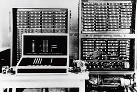
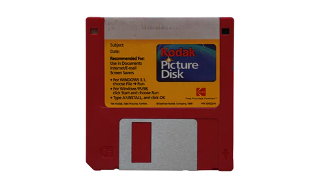
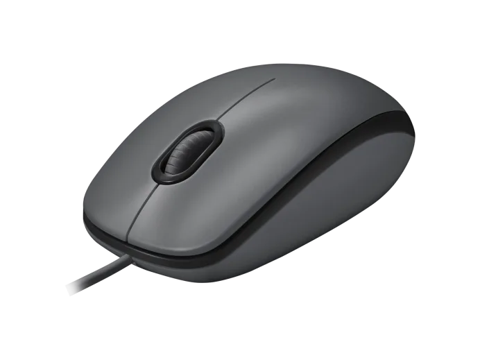
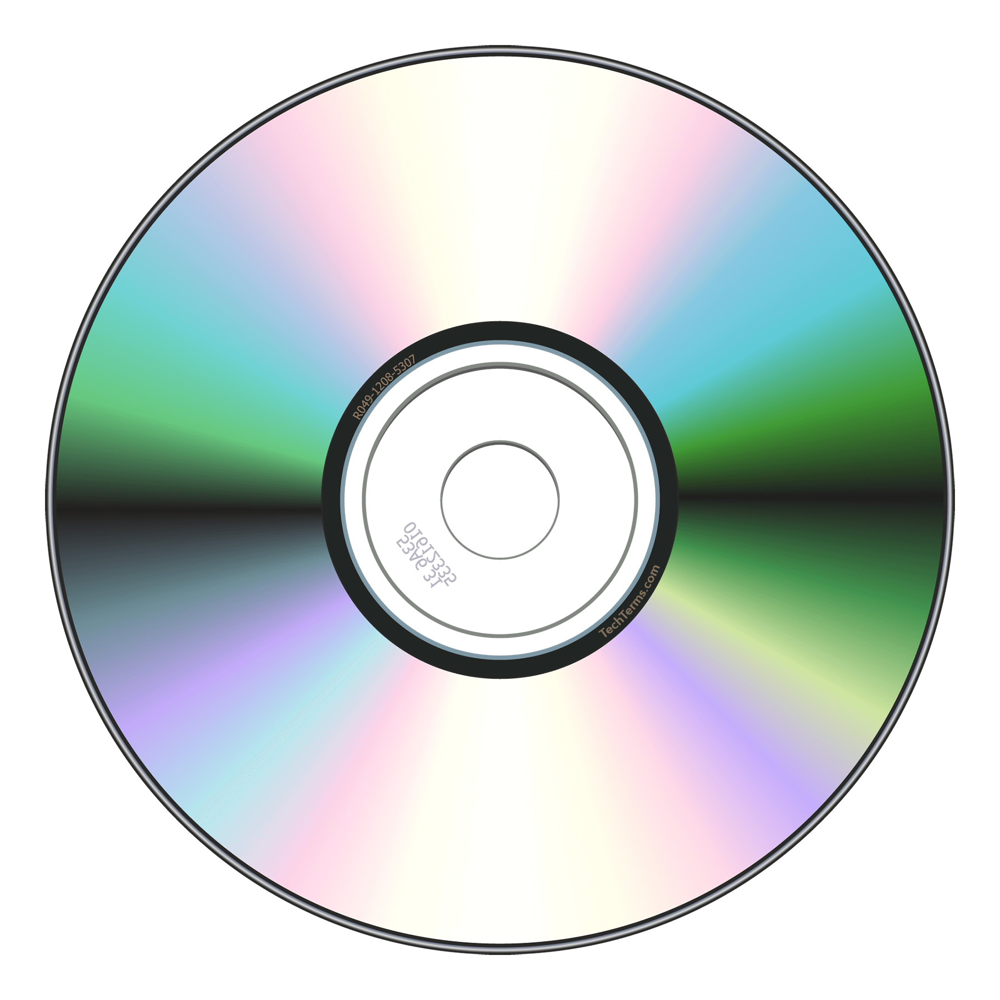
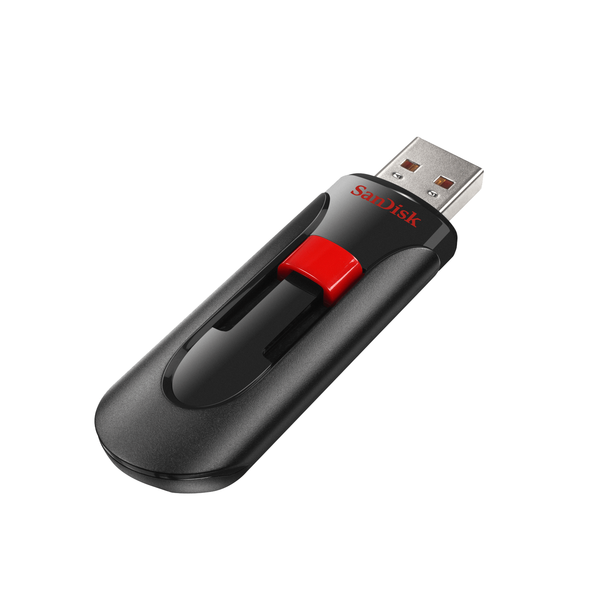

Welcome to our journey through the history of computer parts! We'll explore how technology has changed over the years and how it affects our daily lives.
The First Computers
Turing's Machine and ENIAC

In the 1940s and 1950s, computers were first invented. These early machines used vacuum tubes and were huge, taking up entire rooms! Can you imagine having to walk all the way to the computer just to play a game?
Floppy Disks
The First Portable Storage

In the 1970s, floppy disks were introduced. These flexible disks allowed us to store data and programs in a portable way. It was like having a tiny library in your pocket!
Software
The Magic That Makes Computers Run
In the 1960s, software was first developed. Software is like a set of instructions that tells the computer what to do. Without software, computers would just be fancy calculators!
Hardware
The Physical Parts That Make Computers Work
Hardware is the physical part of the computer that we can touch. It includes things like CPUs, keyboards, and monitors. Without hardware, software would be useless!
Mouse Pads
The Birth of Graphical User Interfaces

In the 1980s, mouse pads became popular. This allowed us to interact with computers using graphical user interfaces (GUIs). It was like having a magic wand that could control the computer!
CD-ROMs
The First Digital Music and Movies

In the 1980s, CD-ROMs were introduced. These compact discs allowed us to store music, movies, and games in digital form. It was like having a whole library at your fingertips!
Flash Drives
The First Portable Storage Revolution

In the 1990s, flash drives were introduced. These tiny devices allowed us to store data and programs in an even more portable way. It was like having a tiny supercomputer in your pocket!
Tablets and Laptops
The Rise of Mobile Computing
In the 2000s, tablets and laptops became popular. These devices allowed us to work and play on the go. It was like having a whole office in your backpack!
Cloud Computing
Storing Data in the Sky
In the 2010s, cloud computing became popular. This allows us to store data and programs online, so we can access them from anywhere. It's like having a magic bookshelf that follows you everywhere!
Conclusion
The Evolution of Computer Parts
We've come a long way since the early days of computers! From floppy disks to flash drives, software to cloud computing, we've seen incredible advancements in technology. Who knows what the future will hold?